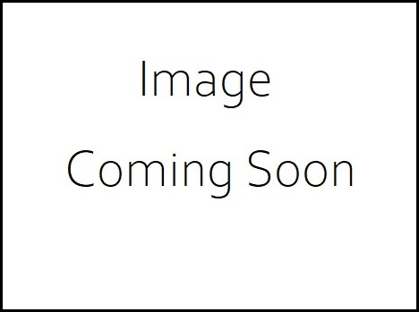

Portfolio
Home
(current)
Gallery
#100DaysOfCode
(current)
About Me
Annika Hanlon
An aspiring developer from Ireland
Sample Projects
Project 1
See Live Source Code
Project 2
See Live Source Code
Project 3

See Live Source Code